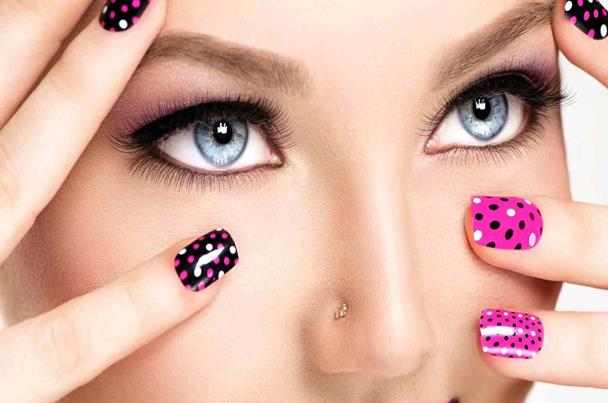

<!-- We don't need full layout here, because this page will be parsed with Ajax-->
<!-- Top Navbar-->

<div class="pages">
  <!-- Page, data-page contains page name-->
  <div data-page="about" class="page">
    <!-- Scrollable page content-->
    <div class="page-content">
      <div class="navbar">
  <div class="navbar-inner">
    <div class="left"><a href="#" class="back link"> <i class="icon icon-back"></i><span>العوده </span></a></div>
    <div class="center sliding">   </div>
    <div class="right">
       
      <!-- Right link contains only icon - additional "icon-only" class--><a href="#" class="link icon-only open-panel"> <i class="icon icon-bars"></i></a>
    </div>
  </div>
</div>
      <div class="content-block presentcon">
<div class="row">
  <div class="col-100">

  </div>
</div>

<div class="row t">
 طلاء الأظافر من مبهجات المرأة والتي تعطي شكلاا جميلا وجذابا ليديها ولكن كيف تحافظ المرأة علي طلاء أظافرها من التقشير تعرفي معنا علي الطريقه

<br>
إذا كنت في صالون التجميل أو في المنزل، فلا تنقعي أظافرك بالماء، لأن الجلدة المحيطة ستتمدّد، وبعد جفافها ستعود إلى حجمها الطبيعي وتترك فراغات
<br>

ادهني الطلاء باتجاه واحد من الأسفل إلى الأعلى.
<br>
 قبل وضع الألوان، يجب استخدام الطلاء المخصّص للحماية لأنه يمنع التصاق الألوان بالأظافر.
<br>
 بعد وضع الطلاء، ينصح أيضاً بوضع طبقة من الطلاء المخصّص للحماية والتجفيف السريع. ستمنحك هذه الطبقة مزيداً من اللمعان.
 <br>
  إنّ زيادة عدد طبقات الطلاء لا تحمي من التقشّر، ومن الأفضل وضع طبقتين رقيقتين
  <br>
   بعد دقيقتين من الانتهاء من وضع الطلاء، مرّري أصابعك تحت الماء البارد؛ هذه الخطوة لن تزيل الطلاء بل ستساهم في تثبيته
   <br>
   إذا أردت المحافظة على الطلاء لأطول فترة، فلا مفرّ من استخدام القفازات أثناء العمل في المنزل أو الحديقة.
</div>
   </div>
    </div>
  </div>
</div>